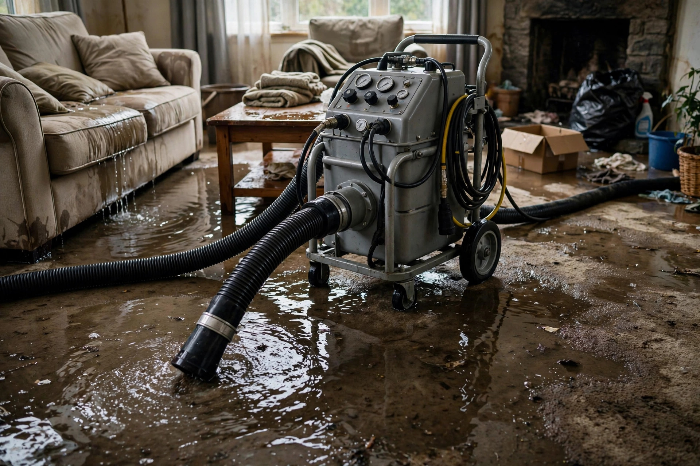

Water Extraction in Nampa, ID
Standing water doesn't wait, and neither should you. Powerful extraction pulls it out fast — then drying equipment takes over the same visit.
What happens when you call
Source stopped
First priority: shut off the water. We'll talk you through locating the main valve while help is on the way.
Water extracted
Standing water comes out with high-powered extractors — from floors, carpet, and low spots where it pools.
Drying begins
Air movers and dehumidifiers go in immediately. The faster drying starts, the less damage spreads.
Moisture verified
Meters track walls and floors until readings hit dry standards. Nothing is declared done on a guess.
Where Nampa water emergencies start
Lake Lowell's irrigation network threads through south Nampa. Canal laterals and pressurized lines create water risks most cities never see.
Supply line bursts
Winter cold snaps split lines in garages and crawlspaces. A single burst line can release hundreds of gallons overnight.
Irrigation lateral overflow
During irrigation season, lateral ditches near Lake Lowell can overtop in heavy rain, sending water toward foundations.
Appliance failures
Washing machine hoses and water heater tanks fail without warning. Upstairs failures soak the floors below within minutes.
Two paths once water is out
Structure dries in place
When water is caught early and materials respond well, drying equipment finishes the job with minimal teardown.
Remove and rebuild
Saturated drywall, swollen trim, and damaged flooring get removed so framing can dry fully before repairs.
Sources: EPA — Mold, Moisture & Your Home
Documenting the damage for your claim
If you're filing an insurance claim, documentation starts the moment you discover the water. Photograph everything before anything is moved — the water line on walls, soaked belongings, the source if it's visible. These photos become the backbone of your claim.
Keep a simple list of damaged items with approximate values. Don't throw anything away until the adjuster has seen it or given permission. Most policies distinguish between sudden incidents (a burst pipe) and gradual damage (a slow leak) — sudden events are typically covered while long-term seepage often isn't.
We provide detailed moisture readings and a written scope of work that adjusters can use directly. The drier the documentation, the smoother the claim.
What arrives on the truck
Extractors
Truck-mounted or high-capacity portable units pull standing water from floors and carpet at gallons per minute — far beyond any household machine.
Air movers
High-velocity fans drive air across wet surfaces and into wall cavities, accelerating evaporation where it matters most.
Dehumidifiers
Commercial desiccant and refrigerant units strip moisture from the air so evaporated water actually leaves the building.
A Nampa homeowner wakes to water across the laundry room floor — the washer supply hose split overnight. Extraction removes the standing water, the hose gets replaced, and air movers dry the subfloor before mold gets a foothold.
Common questions, straight answers
How fast do you respond to a water emergency in Nampa?
Calls are answered around the clock. Arrival time depends on current workload and your location, but water emergencies get priority scheduling.
What kind of equipment pulls the water out?
Truck-mounted or portable extractors for standing water, then air movers and dehumidifiers for the drying phase. The IICRC S500 standard guides the process.
Should I try to remove the water myself first?
Shutting off the source and moving valuables helps. But deep extraction needs professional equipment — household wet-vacs can't pull water from padding and subfloor.
Will my carpet have to be replaced?
Clean-water incidents often allow carpet to be saved after extraction and drying. Contaminated water usually means the padding goes and carpet is evaluated case by case.
How do you know when everything is dry?
Moisture meters check walls, floors, and framing against dry standards. Drying continues until readings confirm it — not just until surfaces feel dry.
Water where it shouldn't be?
Every minute counts with standing water. Call now — extraction starts the moment we arrive.